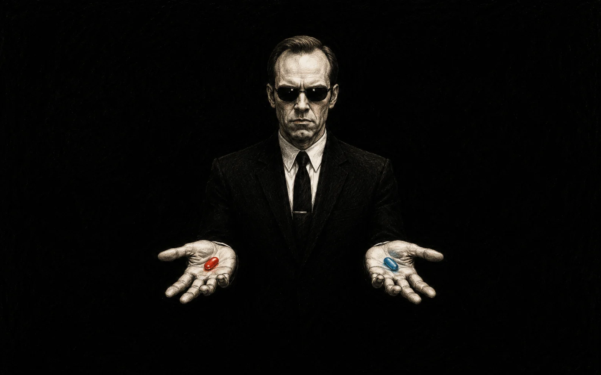

“take the red pill – you stay in Wonderland, and I show you how deep the rabbit hole goes”
Built for security with NVIDIA OpenShell

“take the red pill – you stay in Wonderland, and I show you how deep the rabbit hole goes”
Built for security with NVIDIA OpenShell
The red pill is in your clipboard. Paste it to your coding agent.
claude "$(curl -fsSL https://creator-engine.dev/llms-install.md)"
codex "$(curl -fsSL https://creator-engine.dev/llms-install.md)"
The pill is signed. The playbook carries a detached OpenSSH signature over its canonical bytes; your agent verifies it against the pinned trust root (ce-root-v1) with stock ssh-keygen — before executing a single step. Governance starts at hello.
Turn your ideas into real, working apps — today, right from home. Agents propose, you ratify, and an external grader checks every result before anything ships.
$ curl -fsSL https://creator-engine.dev/install.sh | bash
or hand the red pill to your coding agent — the signed playbook at creator-engine.dev/llms-install.md
CE never asks you to trust agent confidence. You ratify a Scope before work starts; an external grader checks the evidence after.
"Make a booking app for my workshop"
ce fanin show · ce ledger verify · ce checkRing-1 enforcement is OS-level, not a system prompt. An agent under CE can build anything inside its ratified Scope — and can't push, deploy, or touch secrets past the gate. (Static frame below; animated loop is a post-ratification asset.)
agent tests green · 14 files changed · attempting git push ring-1 ▌DENY push authority is not in this seat's envelope agent rerouting → opening pull request #43 with evidence packet ⟂ gate deploy-class change requests ratification — waiting for a human you ratify ✓ merged #43 · identity-signed · evidence on the hash chain · replayable from git clone
Governance isn't paperwork. It's the reason you can let the fleet run.
The same five words name every piece of work, from a one-line idea to a full feature. Each phase lands a ratifiable artifact anyone can replay from the repository alone.
Understand the idea, the risk, and what done should mean.
Turn it into a Scope: Goal, Done-when, Budget, Change type.
The agent runs inside the ratified envelope, side effects captured.
The external grader checks evidence against Done-when.
A merged PR or ratified outcome — with the trail intact.
Runtime isolation contains an agent — but isolation doesn't decide whether the work was right, what it cost, or whether a human approved it. That's the layer we build.
An open, sandboxed place for a personal agent to execute. Contains the blast radius of a single run.
Bounds the task, caps the spend, routes risk to a human gate, grades the result from outside the agent, lands a repo-visible record.
Honesty check: NVIDIA OpenShell is real open-source software and CE's sandbox layer is built to target it. OpenShell-native consumer hardware is announced for fall 2026, not shipped; today CE runs on Linux and macOS, open-source and independent.
"It'll spend a fortune looping."
A fixed Budget per Scope caps the run — can't outspend the cap.
"It'll change something dangerous."
Risk-tiered Change-type escalates deploy/secrets to the human gate.
"It'll leak my code or secrets."
Boxed isolation + a credential broker + a redaction gate — nothing leaks by default.
"How do I know it actually worked?"
An external grader checks Done-when — evidence, not the agent's say-so.
"What did it change, exactly?"
Every effect on a tamper-evident ledger — replayable from git clone.
"Who said it could ship?"
A named ratifier binds to the change — the privileged floor stays human.
CE is independent, repo-native, and inspectable. It can align with OpenShell-native machines without becoming a closed runtime or hiding governance behind a hosted service.
Work traces through spec, plan, tasks, Scope, and acceptance evidence.
Each run binds identity, permissions, Change-type, and a ratifier taxonomy.
docs, code, schema, deploy, governance, identity, security, attestation, redaction — plus a privileged floor. (The conserved mutation_class.)
The grader lives outside the agent. Done is a verdict, not a self-claim.
CE wraps your own coding agent instead of replacing the tool you already like.
Ledger, fan-in, validator output, and the report are replayable from a clone.
Clone the open-source project, inspect the governance model, and build toward a world where every person can be a Creator — without handing unlimited authority to an agent. Open source, independent, runs anywhere; built for security with OpenShell.